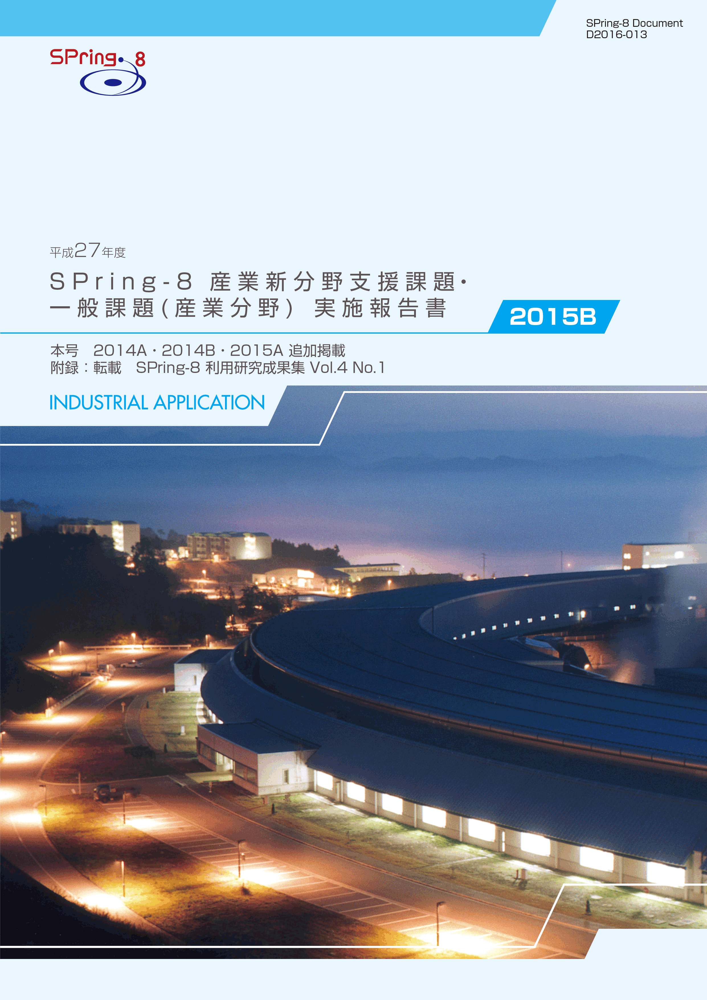
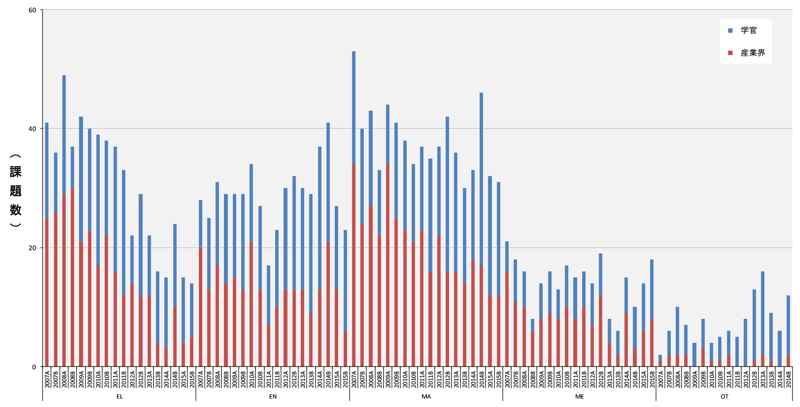
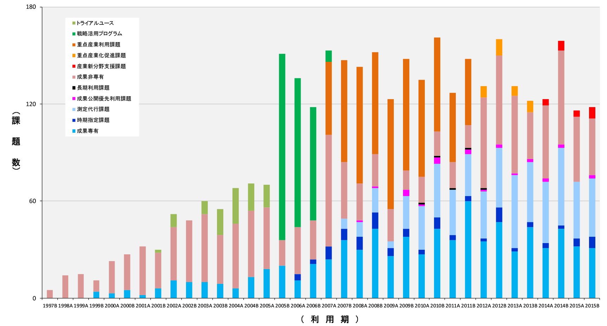
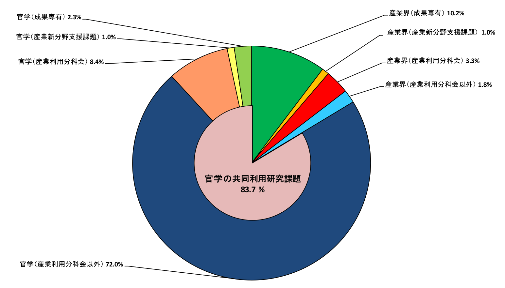
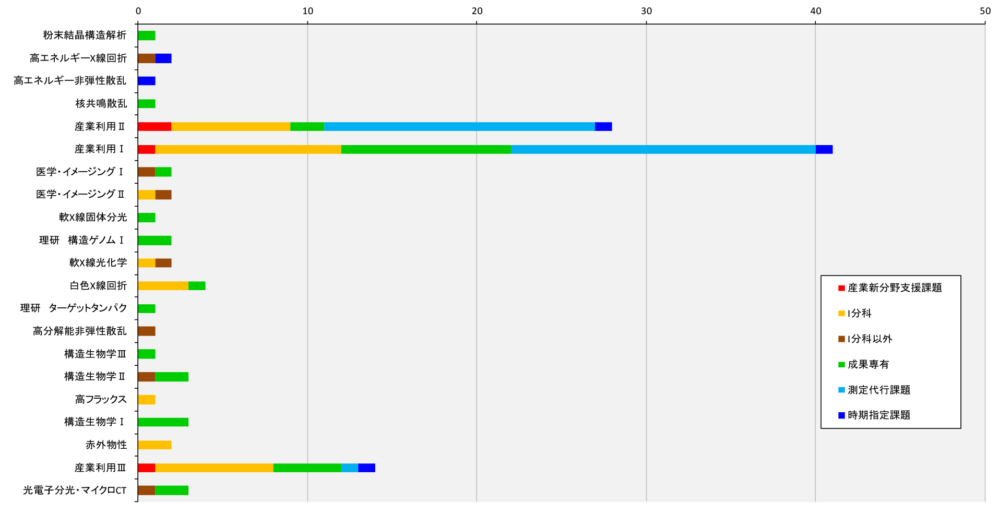
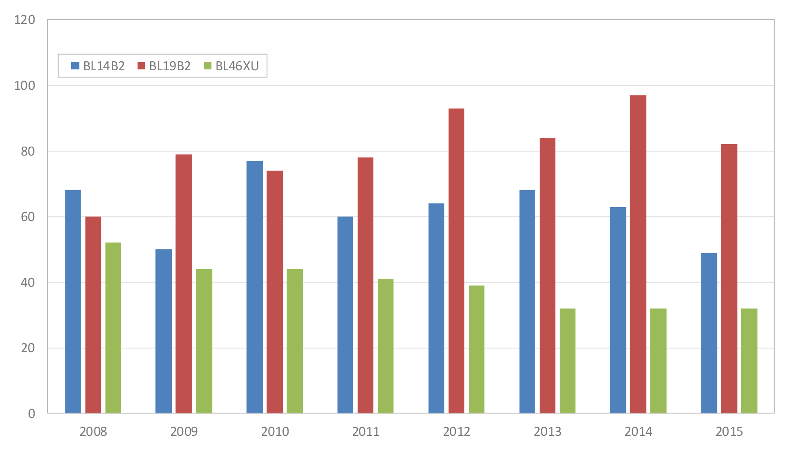

1. はじめに2. 課題募集制度の概要
3. 成果公開の考え方
4. 実施状況
5. 産業利用分野の利用動向
6. 産業利用促進への課題
7. 報告書の採録対象
8. 報告書
* 送付を希望される方は、連絡先（氏名、所属、〒住所、E-mail）をご記入の上、 事務局 support@spring8.or.jp までE-mailでご連絡ください。
平成26年度（2014A期）より新たな領域指定型重点課題として、これまで放射光利用が少なかった産業分野のSPring-8利用の拡大を目指して産業新分野支援課題の募集を開始した。本報告書は2015B期の産業利用分野における課題実施状況の報告を目的として、2015B期に実施した一般課題（産業利用分野）と産業新分野支援課題のうちSPring-8利用研究成果集としての審査を行わなかった課題の報告書を収録したものである。
- 一般課題（産業利用分野）
一般課題（産業利用分野）の課題とは、課題申請の際に産業利用分野（I）での課題審査を希望した成果非専有の一般課題（課題審査は課題審査委員会産業利用分科会が行う）である。これまでは一般課題（産業利用分野）への申請は、申請者の所属機関を問わずに認めていたが、2015A期からは実験責任者もしくは共同実験者に民間企業もしくは、それに準じる機関に所属する者が含まれていることを申請要件とした。民間企業に準ずる機関とは、民間企業からの委託による試験・研究・開発を事業に含んでいる機関と定義している。また、地方自治体が設置している公設置試験場や地方独立行政法人等（○○県工業技術センター）も、民間企業に準ずる機関としている。なお、民間企業に所属する者が産業利用分野以外の分野に申請した課題は一般課題（産業利用分野）としては扱わない。一般課題（産業利用分野）の募集は他分野の一般課題と同様に、年2回の課題募集期間において全ての共用ビームラインへの申請が可能である。一般課題（産業利用分野）に特徴的な制度は以下の6項目である。
a） 産業利用ビームラインI（BL19B2）、II（BL14B2）、III（BL46XU）は半期ごとに前半を1期、後半を2期とした2回の課題募集を行う（年4回課題募集を実施）。1期と2期の両方で利用実験を行いたい場合は、継続的な研究内容の課題であってもその都度、新規課題として応募することが必要である。なお2013A期よりこれらのビームラインでは成果非専有の一般課題は、審査希望分野が産業利用分野である一般課題（産業利用分野）のみとした。これらのビームラインを指定した申請であるものの、審査希望分野が他分野の課題は申請者の希望にかかわらず産業利用分野で審査する。
b） 新規利用拡大の観点から課題審査において利用経験を考慮する。
c） 民間企業利用拡大の観点から課題審査において所属機関を考慮する。
d） 課題実施後約2～4か月以内に所定の書式の産業利用課題実施報告書を提出する。なお、この報告書はSPring-8利用研究成果集として審査を受けることも可能である。
e） 全採択課題に担当コーディネーターを配置する。
f） 科学技術的妥当性に関する審査は
（1）産業基盤技術としての重要性および発展性
（2）社会的意義および社会経済への寄与度の観点を重視して実施する
に重点をおいて実施する。
- 産業新分野支援課題
「産業新分野支援課題」を領域指定型の重点研究課題として、平成25年9月24日に指定した。その狙いは以下のとおりである。
これまでの産業利用促進の取り組みにより、一部の産業分野ではSPring-8の放射光利用が普及した一方、経済のグローバル化を反映して国内の産業構造も大きく変化し、新しい産業の創生をもたらすような研究開発が必要になっている。そこで、新産業分野の研究開発を促進するため、SPring-8で放射光利用に新規に取り組む産業分野の課題に重点的な支援を行う産業新分野支援課題を実施する。
2-1） 募集の対象
課題の目的に沿って、SPring-8での放射光利用実績の少ない産業分野の研究開発に関する課題を募集の対象とする。該当する産業分野の例として食品･食品加工、農林水産物、建設資材、金属加工、鉱物資源が挙げられるが、この限りではない。例示された分野に該当しない場合は、課題申請の際に放射光利用実績の少ない産業分野であることの説明が求められる。なお、一般課題（産業利用分野）のような実験責任者及び共同実験者の所属機関に関する要件は設定しない。
2-2） 対象ビームライン、シフト数割合、及び募集
産業利用ビームラインI（BL19B2）、II（BL14B2）、III（BL46XU）を対象に、ユーザー実験に供するビームタイムのうち20%以内（施設留保を含めたユーザータイムの16%以内）を配分する。
募集は一般課題と同時期に半期2回行う。なお、1期募集において採択された通期課題の2期分のシフト数も含めた合計シフト数が半期を通じたビームタイムの上限に達した場合は2期に募集を行わない。
2-3） 通期課題
1期、2期の両方で利用実験を行いたい場合は、その都度新規課題としての応募が必要であるが、継続的･計画的な実施により一層の成果創出が期待される課題は、“通期課題”とし1期応募の折に2期分のシフト数も含めた申請を受付ける。なお、2期は通期課題の募集は行わない。
2-4） 審査
一般課題（産業利用分野）に先んじて課題審査委員会産業利用分科会が審査を行う。なお、産業新分野支援課題として不採択となった課題は、自動的に一般課題（産業利用分野）の課題として、他の一般課題と一緒に改めて審査される。産業新分野支援課題においては一般課題（産業利用分野）の観点に加えて研究対象がSPring-8での放射光利用の新規な産業分野に該当するかどうかも含めて審査する。
2-5） 報告
WEBより提出するビームタイム利用報告書、利用実験課題報告書に加えて課題実施後約2～3か月以内に所定の書式の産業新分野課題実施報告書を提出する。なお、この報告書はSPring-8利用研究成果集として審査を受けることも可能である。
成果の公開については、産業新分野支援課題、一般課題（産業利用分野）ともに他の成果非専有の一般課題と同様に学術誌上への論文掲載（博士論文も含む）もしくはSPring-8利用研究成果集への採録による成果公開が求められる。この産業利用課題実施報告書及び産業新分野支援課題実施報告書の提出は成果の公開とは認定されないが、これらの報告書は著者からの申し出によりSPring-8利用研究成果集としての審査を受けることが可能である。SPring-8利用研究成果集としての審査を受けない実施報告書は、JASRIコーディネーター等による校閲を経て課題実施期が終了して約6か月後に出版･公開されるが、それ以外はSPring-8利用研究成果集としての審査終了後に公開される。
なお、平成27年度2015B期の一般課題（産業利用分野）及び産業新分野支援課題の実施報告は、平成28年9月に開催予定の「第13回SPring-8産業利用報告会」等で口頭及びポスター形式での報告を予定している。
以下に平成27年度2015B期の産業新分野支援課題、及び一般課題（産業利用分野）の応募・採択結果を表1、表2にまとめる。
- 応募・採択結果 産業新分野支援課題
表1．応募時期及び研究機関別課題応募・採択結果
*産業新分野支援課題で不採択となり、一般課題として再審査され採択された課題は採択数から除外している。募集時期 機関分類 応募数採択数＊採択率（%）第1回募集学官6466.7産業界5480.0合計11872.7第2回募集学官6350.0産業界33100.0合計9666.7総計201470.0
産業新分野支援課題の応募数は第1期、第2期ともに2014B期、2015A期よりも多く、これまでの最多となった。その一方で、採択数は2014B期とおなじ14課題で採択率はもっとも低くなった。実験責任者の所属機関別では、2014A第1期から2015A第2期まで6期連続で産業界から申請された課題の採択数が学官からの応募された課題の採択数よりも少なかったが、2015Bでは第1期、第2期ともに産業界の採択数と学官の採択数が同じで、採択率は両期とも産業界の方が高くなった。なお、申請内容が新しい産業分野には該当しないなどの理由で産業新分野支援課題として不採択となった課題が6課題あった。これらのうち一般課題での再審査で採択された課題は2課題にとどまり、4課題が不採択となった。第1期、第2期ともに採択課題の大半がこれまで利用が少なかった食品分野の課題で、産業新分野支援課題の制度は産業分野の新規開拓、とりわけ食品分野の開拓に有効に機能していると考えられる。
- 応募・採択結果 一般課題（産業利用分野）
表2．応募時期及び研究機関別一般課題応募・採択結果
*応募数には産業新分野支援課題で不採択となり、一般課題として再審査された課題（1期 産業界1、学官2、2期 産業界0, 学官3）を含む。また、採択後に12条課題に分類されるJASRI職員から申請された課題を応募数（1期 6課題、2期 4課題）、採択数（1期 5課題、2期 2課題）を除く。一般課題と同時に審査される萌芽的研究支援課題の応募数（1期 11課題、2期 6課題）、採択数（1期 8課題、2期 1課題）を除く。募集時期 機関分類 応募数＊採択数採択率（%）第1回募集 学官493571.4産業界351954.3合計845464.3第2回募集 学官261038.5産業界11545.5合計371540.5総計1216957.0
一般課題（産業利用分野）は応募数が121課題（12条課題を含めると131課題）で2015A期と同様に前年同期の2014B期の応募数140課題（12条課題を含めると162課題）から15%程度減少した。2015A期に引き続き2015B第1期、第2期ともに産業界からの応募の減少が大きく2015B期全体では2014B期よりも16件（約25%）の減少となった。一方、学官からの応募は2014B期とほぼ同じ水準であった。ビームラインごとの応募状況を2014B期と比較すると、産業界、学官ともに産業利用以外のビームラインへの応募数には変化が認められないが、産業界の課題はBL14B2では第1期が3課題（37.5%）、第2期が5課題（62.5%）、BL19B2では第1期が5課題（50.0%）、第2期が3課題(50%)、BL46XUでは第1期が2課題（25.0%）、第2期が4課題（44.4%）の減少となり、産業利用ビームラインを中心に産業界による一般課題（産業利用分野）への申請の顕著な減少が見られた。BL19B2での減少は主に小角散乱の申請減少によるもので、2015A第2期の募集期直前に受け入れを開始した小角散乱測定代行の影響と考えている。BL46XUは2014B期が4課題であったHAXPESの成果専有課題が2015B期は8課題に倍増していることから、HAXPESにおいても成果専有課題への移行の始まりを示唆する結果となった。なお、測定代行を含む成果専有課題の申請状況からは産業界によるBL14B2への課題申請の減少を説明することはできず（測定代行は2013年度をピークに減少傾向）、あいちSRセンターの稼動が主な原因と推測される。
2015B期を通じた採択率は57.0%で2014A期の71.1%、2014B期の74.4%、2015A期の69.5%よりも著しく低くなった。特に産業界の課題の採択率は第1期、第2期ともに60%を下回る過去に例のない低さとなった。2014B第1期と比較して全ビームラインを通じて低い採択率であったが、BL27SUの採択数が75%減の1課題にとどまったことが特徴的である。第2期はBL14B2、BL46XUの採択率が16.7%,（産業界は33.3%） 38.5%（産業界は20.0%）と2014B第2期と比較して著しく低くなった。これはBL14B2では39シフトの成果公開優先利用課題、BL46XUでは27シフトの成果専有課題が実施されたため、一般課題（産業利用分野）に配分できるビームタイムが少なかったことが原因である。
- SPring-8利用研究成果集としての審査
前記のとおり2011B期より成果公開の扱いが変更になったため、実験責任者の希望に応じて重点産業利用報告書をSPring-8利用研究成果集として査読審査を受けて公開文書として扱うことも可能とした。産業新分野支援課題及び産業利用分野の一般課題も同様で、SPring-8利用研究成果集として審査を受ける公開文書とすることができる。平成28年7月10日の時点で実施報告書作成対象83課題のうち15課題がSPring-8利用研究成果集としての審査を希望している。公開は査読審査が終了し成果審査委員会での承認後となるため、これら15課題の報告書はここには採録されない。
-
１）産業分野ごとの動向
図1は、産業利用分科会で審査を経て採択された成果非専有課題実施件数の推移である。2014A期以降は産業新分野支援課題と一般課題（産業利用分野）の和、2012A期から2013B期までは重点産業化促進課題と一般課題（産業利用分野）の和、2011B期以前は重点産業利用課題と一般課題（産業利用分野）の和であるが、2015A期とほぼ同じ分布となったが、環境・エネルギー分野（EL）での産業界の課題数の大幅な減少が目立つ。この分野はXAFSの利用が多いため、BL14B2での産業界実施課題の減少を反映している。なお、医薬品・日用品（ME）は学官、産業界ともに利用が増加しているが、産業新分野支援課題で例示している食品加工を対象とした課題の増加によるものである。

図1. 産業利用分野における成果非専有課題実施件数
２）民間企業の課題実施動向
図2は共用ビームラインにおける民間企業の課題実施状況の推移を課題種ごとに示している。毎年B期はA期よりも実施課題数が多い傾向があったが、2015B期は2015A期の116課題とほぼ同じ118課題で2014B期の159件から大幅な減少となった。成果専有の一般課題と測定代行の減少が大きく、成果専有の一般課題、測定代行ともに2014B期より12課題少なく、それぞれ31課題と36課題であった。測定代行の依頼は年度末に近づくに従って増える傾向があるため、2015B期が12月で終了（1, 2月の運転なし）したことも大幅な減少の一因と考えている。

図2. 民間企業による共同利用研究実施課題の課題分野別推移
図3は2015B期共同利用研究実施課題（共用ビームラインで実施した課題）を所属機関、専有／非専有の別でその割合を示している。図2で示したとおり、2015B期は2014B期以前と比較して産業界が実施した課題が少なく、全体に占める割合も16.3%となり、2015A期、B期を通じて大幅な減少となった。産業界課題の実施数変動はビームラインごとに特徴があるため、詳細は次項に記す。

図3．2015B期 共同利用研究実施課題における民間企業の実験責任者の割合
３）民間企業の共用ビームライン利用状況
2015B期におけるビームラインごとの民間企業による利用件数を図4(a)に示す。一般課題（産業利用分野）及び成果専有課題は、産業利用ビームラインI、II、IIIでの実施が他のビームラインよりも著しく多いのはこれまでと同様である。また、産業利用I、IIビームラインにおいて測定代行を含む成果専有課題が一般課題（産業利用分野）及び産業新分野支援課題などの審査課題よりも実施件数が多くなるのもここ数年の傾向である。
図4(b)は2008年の以降の民間企業による産業利用ビームラインI、II、IIIにおける産業界実施課題の年度推移である。一般課題（産業利用分野）が産業界における成果非専有課題の主要な課題種となった重点産業利用課題終了後の2012年度以降に注目すると、BL19B2とBL46XUは横ばいである一方、BL14B2は漸減傾向にあるといえる。中でも測定代行の減少が顕著で、産業界による有償利用（SPring-8の成果専有課題に対応）を前提としたAichi SRセンターの稼働による影響と考えている。

図4（a）．2015B期 利用技術分野別（ビームライン別）民間企業利用件数

図4（b）．民間企業によるBL14B2、BL19B2、BL46XUの実施課題数推移
５．産業利用分野の利用動向でも記したとおり、民間企業の実施課題の成果専有へ移行と3本の産業利用ビームラインへの集約は、これまでに産業利用ビームラインで行ってきた機器整備や利用制度設計が適切に行われたことを示すものと考えられる。しかしながら、2015A期以降は産業界が実施する課題数の全課題に占める割合が大幅に減少している。その一方でビームタイムが確保できず測定代行に応じられない事例がBL19B2を中心に複数発生している。これらは、現行の制度や装置・技術の整備が産業界利用者の需要への対応が不十分であることを示している。
平成28年7月10日の時点で課題のうち15課題が利用研究成果集としての審査を希望している。これ以外の67課題の産業新分野支援課題実施報告書と産業利用課題実施報告書を採録している。また、追加掲載として、2014A期1課題、2014B期1課題、2015A期1課題も掲載している。また、SPring-8利用研究成果集として新たに採択、公開された課題も付録としてSPring-8利用研究成果集より転載して採録している。
測定代行の需要に応えるためには、測定代行を対象としたビームタイムの先行的確保などの利用制度見直しの検討が必要と考えられる。産業利用ビームラインで唯一の挿入光源ビームラインのBL46XUで発生している多数の不採択課題へは、測定の自動化・効率化の推進だけでは対応できないと思われる。最近、BL46XUは従来から行われているHAXPESや多軸回折装置を用いた測定に加えてマイクロビーム回折やX線イメージングなど多様な実験が行われ、幅広い産業分野で利用需要が高まっていることから、他の挿入光源ビームラインの利用等によって供給ビームタイムを増やさない限り解決が難しいと考えている。
SPring-8利用研究成果集 Vol 4 No.1 （http://user.spring8.or.jp/resrep/?cat=21）
連絡先（氏名、所属、〒住所、E-mail）をご記入の上、事務局 support@spring8.or.jp までE-mailでご連絡ください。